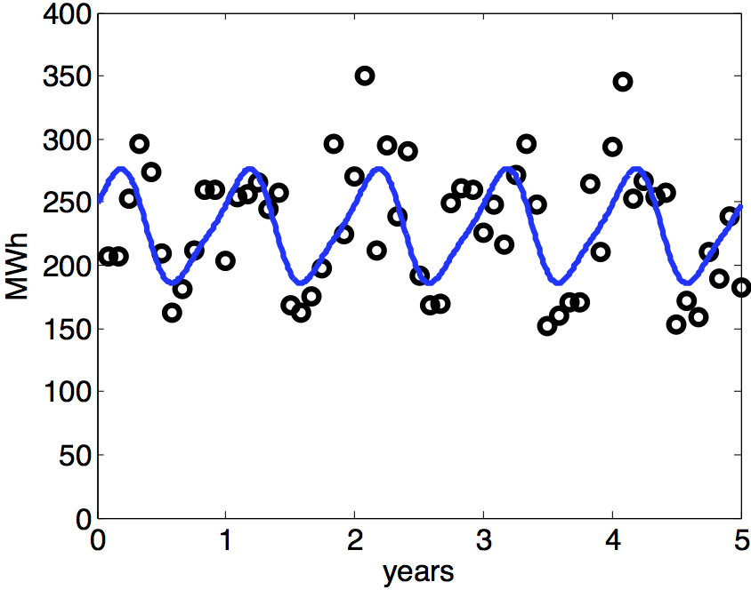
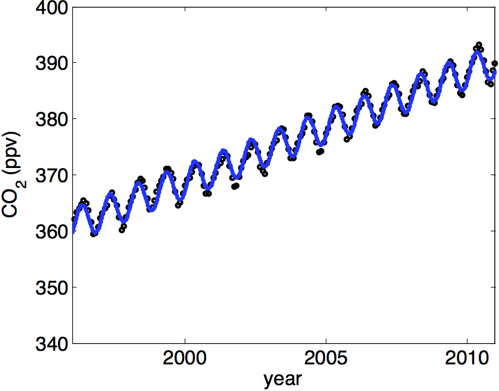

COMPUTER PROBLEMS 4.2
\(\def\ds{\displaystyle} \)
1 Each of the 12 data points \((t_i,y_i)\) leads to an equation
\[c_0+c_1\cos 2\pi t_i+c_2\sin 2\pi t_i+c_3\cos 4\pi t_i=y_i\]
in the coefficients \(c_j\). The \(t_i\) are evenly-spaced from \(0\) to
\(11/12\), using years as the time unit. The matrix form of the
equations is
\[\left[\begin{array}{cccc}
1&\cos 2\pi(0)&\sin 2\pi(0)&\cos 4\pi(0)\\
1&\cos 2\pi(\frac{1}{12})&\sin 2\pi(\frac{1}{12})&\cos 4\pi(\frac{1}{12})\\
\vdots&\vdots&\vdots&\vdots\\
1&\cos 2\pi(\frac{11}{12})&\sin 2\pi(\frac{11}{12})&\cos 4\pi(\frac{11}{12})\\
\end{array}\right]
\left[\begin{array}{c} c_0\\c_1\\c_2\\c_3\\
\end{array}\right]
= \left[\begin{array}{c} 6.224\\6.665\\\vdots\\6.372\\
\end{array}\right].\]
Computing the normal equations yields
\[\left[\begin{array}{cccc}
12&0&0&0\\0&6&0&0\\0&0&6&0\\0&0&0&6\\
\end{array}\right]
\left[\begin{array}{c} c_0\\c_1\\c_2\\c_3\\
\end{array}\right]
= \left[\begin{array}{c} 67.0050\\
4.5247\\
0.7318\\
1.1610\\
\end{array}\right],\]
and the least squares solution is \[c=
\left[\begin{array}{c} 5.5837\\
0.7541\\
0.1220\\
0.1935\\
\end{array}\right].\]
The best least squares periodic model of form (4.9) is
\(5.5837+0.7541\cos 2\pi t+0.1220\sin 2\pi t+0.1935\cos 4\pi t\).
The RMSE of the fit is \(||b-Ax||_2/\sqrt{12}\approx 0.1836\).
3 Substituting the data into the linearized model \(\ln y=k+c_1t\)
results in
\[\left[\begin{array}{cccc}
1&0\\
1&10\\
1&30\\
1&40\\
\end{array}\right]
\left[\begin{array}{c} k\\c_1\\
\end{array}\right]
= \left[\begin{array}{c} \ln 3039585530\\
\ln 3707475887\\ \ln 5281653820\\ \ln 6079603571\\
\end{array}\right]\]
where we are using years after 1960 as the time variable.
The normal equations are
\[\left[\begin{array}{rr}
4 & 80\\
80 & 2600\\
\end{array}\right]
\left[\begin{array}{c} k\\c_1\\
\end{array}\right]
= \left[\begin{array}{c}
88.784\\1793.1\\
\end{array}\right].\]
Solving for the coefficients yields
\(k\approx 21.848, c_1\approx 0.0174\), and \(c_0 =
e^k \approx 3079440361\). The best model through linearization is
\[y=c_0e^{c_1t} = 3079440361e^{0.0174(t-1960)}.\] Substituting
\(t=1980\) yields the estimate \(4361486000\), which differs from
the actual 1980 population by 91 million.
5 (a) Differentiating the model \(y=c_0te^{c_1t}\) and setting
the result to zero gives the equation \(0=c_0e^{c_1t}(1+c_1t)\),
whose solution is \(t=-1/c_1\), the maximum.
5 (b) Starting with the model \(y=9.77te^{-0.215t}\), the maximum
occurs at \(t_\text{max} \approx 4.65\) hours, according to (a). The
maximum value is \(y_\text{max}=16.72\). To find the half-life, we must
solve the equation
\[\frac{16.72}{2} = 9.77te^{-0.215t}\]
for \(t_\text{half} = 12.456\), using an equation solver from
Chapter 1. The time needed to reduce from the maximum to half of
the maximum concentration is
\(t_\text{half}-t_\text{max} = 7.81\) hours.
7 (a) The coefficients \(c_0, c_1, c_2, c_3\) are obtained by solving the normal equations for the system \(Ac=b\):
\[\left[\begin{array}{cccc}
1 & \cos 2\pi t_1 & \sin 2\pi t_1 & \cos 4\pi t_1 \\
\\
\vdots & \vdots & \vdots & \vdots \\
\\
1 & \cos 2\pi t_n & \sin 2\pi t_n & \cos 4\pi t_n
\end{array}\right]
\left[\begin{array}{c}
c_0\\c_1\\c_2\\c_3
\end{array}\right] =
\left[\begin{array}{c}
x_1\\ \\ \vdots \\ \\ x_n
\end{array}\right]
\]
where \(x_1,\ldots,x_n\) denotes the monthly wind turbine output in MWh.
The solution of the normal equations give the least squares trigonometric polynomial
\(P(t) = 229.9+26.8160\cos 2\pi t+32.2504 \sin 2\pi t - 8.8833 \cos 4\pi t.\)
7 (b) The least squares curve, shown below, captures the seasonal variation (high production in early spring, low production in early fall) of wind power.

9 (a) The coefficients \(c_0, c_1, c_2, c_3\) are obtained by solving the normal equations for the system \(Ac=b\):
\[\left[\begin{array}{cccc}
1 &t_1 & \cos 2\pi t_1 & \sin 2\pi t_1 \\
\\
\vdots & \vdots & \vdots & \vdots \\
\\
1 &t_n & \cos 2\pi t_n & \sin 2\pi t_n
\end{array}\right]
\left[\begin{array}{c}
c_0\\c_1\\c_2\\c_3
\end{array}\right] =
\left[\begin{array}{c}
x_1\\ \\ \vdots \\ \\ x_n
\end{array}\right]
\]
where \(x_1,\ldots,x_n\) denotes the monthly CO\(_2\) measurement.
The solution of the normal equations give the least squares trigonometric polynomial
\(P(t) = 360.9977+1.9507(t-1996)-1.6669\cos 2\pi (t-1996)+2.4359 \sin 2\pi (t-1996)\),
with RMSE \(=0.8015\).
9 (b) Substituting into the model and comparing with the four data points (numbers 101, 105, 113, 117 respectively) yields \(0.533, 1.580, 0.212\), and \(1.181\) for the errors.
9 (c) The solution of the normal equations give the least squares trigonometric polynomial
\(P(t) = 361.0121+1.9488(t-1996)-1.6668\cos 2\pi (t-1996)+2.4353 \sin 2 \pi (t-1996)+0.8595 \cos 4\pi (t-1996)\),
with RMSE \(=0.5225\).
Substituting into the model and comparing with the four data points yields \(0.105, 0.719, 0.214\), and \(0.318\) for the errors. The best fit curves from 9(a) and 9(c), respectively, are shown below:

9 (d) The solution of the normal equations give the least squares trigonometric polynomial
\(P(t) =361.5409+1.7358(t-1996)+0.0142(t-1996)^2-1.6683\cos 2\pi (t-1996)+2.4355\sin 2\pi (t-1996)\),
with RMSE \(= 0.7650\). The four errors are \(0.788, 1.334, 0.428\), and \(0.984\). This fit is inferior to part (c).
9 (e) The solution of the normal equations give the least squares trigonometric polynomial
\(P(t) = 361.5541+1.7343(t-1996)+0.0142(t-1996)^2-1.6681\cos 2\pi (t-1996)+2.4348\sin 2\pi (t-1996)+0.8593\sin 4\pi (t-1996)\),
with RMSE \(=0.4649\). This fit gives the smallest RMSE. The four errors for this fit are \(0.360, 0.474, 0.002\), and \(0.121\).